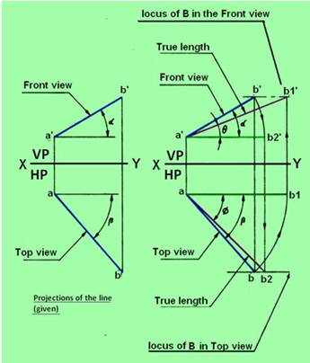

True length and true inclinations of a line
Many times if the top and front views of a line are given, the true
length and true inclinations of a line is required to be determined.
The top and front views of the object can be drawn from if any of the
following data are available:
(a) Distance between the end projectors,
(b) Distance of one or both the end points from HP and VP and
(c) Apparent inclinations of the line.
The problems may be solved by
(i) Rotating line method or
(ii) Rotating trapezoidal plane method or
(iii) Auxiliary plane method.
Rotating line method
The method of obtaining the top and front views of a line, when its true
length and true inclinations are given.
When a view of a line is parallel to the XY line, its other view will be in
true length and at true inclination.
By following the procedure mentioned previously, in the reverse order, the
true length and true inclinations of a line from the given set of top and
front views can be found. The step by step procedure is shown below in
figure 1.

Figure 1. determination of true length and true inclinations of a line.
· Draw the top view ab and the front view a'b' as given
· Rotation of the top view: With center a and radius abrotate the top view to the new position ab1 to make it parallel to the XY line. Since ab1 is parallel to the XY line, its corresponding front view will be in true length and at true inclination.
· Rotation of the front view: With center a' and radius a'b' rotate the front view to the new position a'b2' parallel to the XY line. Since a'b2‘ is parallel to the XY line, its corresponding top view will be in true length and at true inclination. In this position, the line will be parallel to HP and inclined at fto VP. Through b draw the locus of B in the top view. Project b2' to get b2, in the top view. Connect ab2 which will be in true length and true inclination f which the given line AB makes with VP.